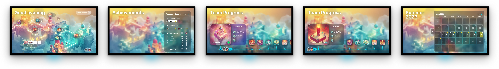
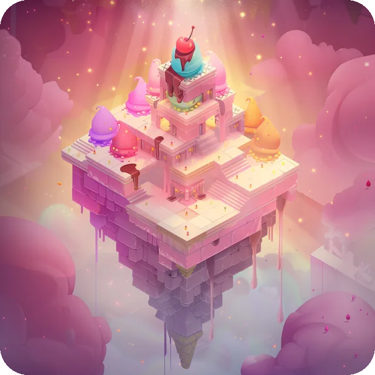
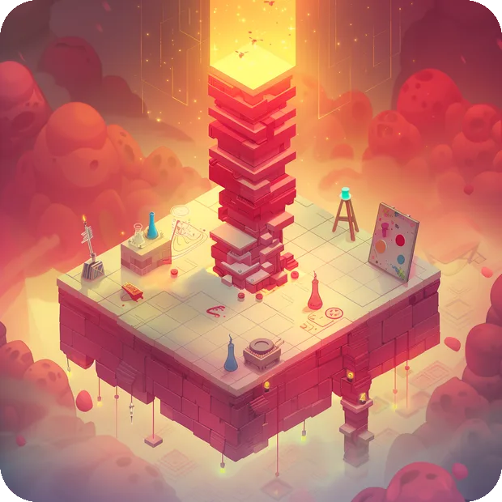
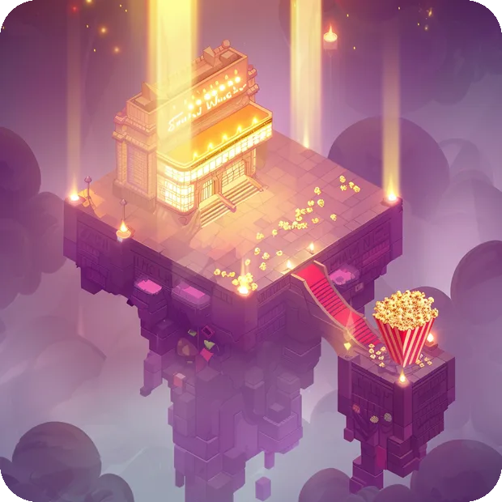
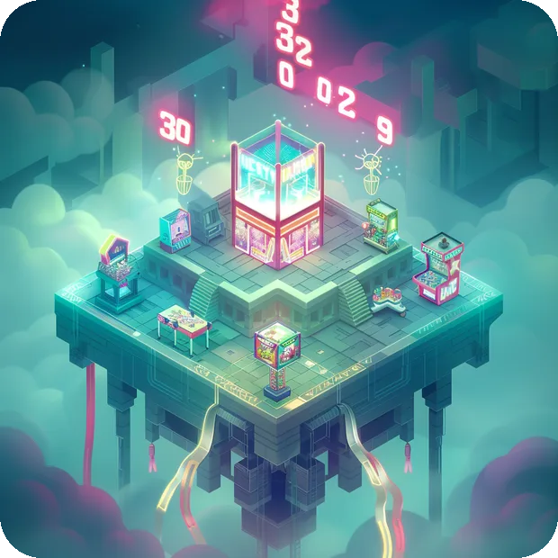
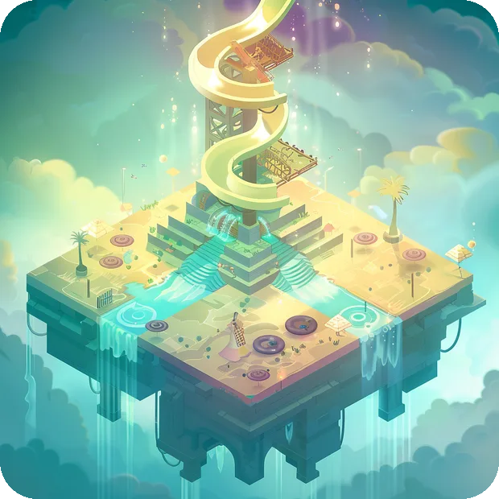

Weeks in, two kids still check their stars every morning - on their own, without me prompting them. The build was never the test. Coming back the next day was.

My kids needed a reason to stay in their own beds this summer. I needed to know what it actually takes to ship a tvOS app. This project solved both problems at once.
SummerQuest is a cooperative family reward system built for Apple TV. Every morning, two kids answer two questions about how they slept. Stars are awarded individually and as a team. Milestones unlock real rewards across a ten-week summer.
The experience runs on a single TV in the living room and an Apple Remote. No phones. No parent facilitation on a good morning. The system runs itself.
I have been making the case inside my organization that AI compresses the distance between an idea and a working product. I wanted to know if that was true from the inside.
This was the test. No engineering team. No sprint planning. No handoff. A product brief written in conversation, a set of architecture decisions, and Claude Code. The first version was on a device and in TestFlight in a single day. The full product took five.
Started with a product brief written in conversation, not a doc. Made architecture decisions before opening Xcode. Built a context system so every Claude Code session started with full project knowledge rather than re-explanation. Deferred design until the core loop was validated with real kids.
The first day was brief to TestFlight. The next four built the real product: a scalable data structure, a fully featured progress timeline with animated milestone cities, daily quest logic with dual check-in flows for each kid, and a looping video map background with ambient audio. The star model was rebuilt entirely after the first test session. One day to something playable. Five days to something worth running all summer.
The design system was documented in a single source-of-truth file that every session read before making visual changes. Frosted glass panels over a full-bleed animated map background — the same panel architecture Disney+ uses on tvOS. Isometric city assets generated in Midjourney. Eight milestone platforms — Base Camp through Dream Park — each with its own color world.
The first build went to the couch. Two kids, one remote, and about four minutes of feedback from my eight-year-old dismantled two of the most load-bearing decisions from the brief.
The stayed-all-night star was causing overnight anxiety. The original model awarded bonus stars for sleeping through the night. The real effect: one of them woke up twice to check if he had made it to morning. That is not the app's job. Sleep is now binary — started in your own bed, one star. The night is yours.
The panel was built for a parent, not a kid at 7am. The original layout opened with team progress: name, city, progress bar. Useful as a dashboard. Not useful for an eight-year-old before breakfast. The rebuilt panel opens with three questions: did you sleep in your bed? Are you keeping healthy? What chores are left? Three cards, one purpose.
Both changes were obvious in retrospect. Neither showed up in planning.
Documenting decisions before building is more valuable than documenting after. The context files written before touching code did more to keep the project coherent than any single technical choice.
The hardest part was not the code. It was knowing what not to build first. And tvOS is genuinely harder than web — tighter constraints, longer feedback loops, fewer guardrails in the tooling. The first-day build was real. So was the work that came after it.
The test was never shipping it. It was whether they would come back the next morning. Weeks later, they still do.
SummerQuest, every morning, running itself.Each milestone is its own world, in order from the first reward to the last. Every city forces its dominant color through the whole scene so it reads from across the room.

1Sweet Village
2Toy Town
3Cinema City
4Arcade Alley
5Splash Kingdom